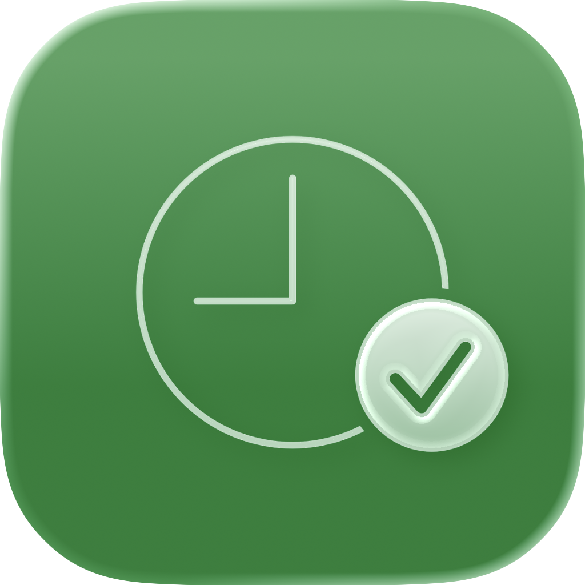

Break validation
Automatic and manual breaks stay inspectable, including warnings for incomplete entries.

PayScope PortfolioNative iOS workspace · 2026
Track time, breaks, tips and expected earnings without losing the bigger monthly picture.

The problem
Schedules, breaks, tips, time accounts and expected pay often live in separate places. That makes a simple question, “Where does this month stand?”, surprisingly hard to answer.
PayScope connects the daily detail with the monthly picture, while keeping the rules behind each calculation visible.
Today
Move through an example shift to see worked time, remaining time and expected earnings update together. The values are illustrative and always remain tied to the configured rate.
Calendar
Filter the example month to isolate workdays, absence and weekends. In the app, the same view connects daily status, tips, warnings and month totals.
Calculations
PayScope calculates expected values from the data and settings entered by the user. It does not replace official payroll, tax advice or legally binding calculations.
Automatic and manual breaks stay inspectable, including warnings for incomplete entries.
Vacation and sick-day values can use recorded history instead of an unexplained flat number.
Overtime and undertime remain connected to weekly targets and individual shifts.
Country and region based imports add context directly to the working calendar.
Statistics
Switch the chart between hours and expected earnings. The full app adds monthly and yearly views, category breakdowns, time-account context and CSV export.
Beyond the app
Live Activity, Dynamic Island, Lock Screen widgets and Control Center actions keep essential shift controls close without requiring a trip through the full app.
Elapsed time and expected earnings remain visible during an active shift.
Start or end a shift, add a tip or mark a sick day through focused App Intents.
Alternative icons and accent colors let the utility fit the rest of the user’s setup.
Data and privacy
On-device foundation. Shift data remains useful locally without a dedicated PayScope account.
Optional iCloud sync. CloudKit connects devices through the user’s Apple account, with a local fallback.
Portable records. Monthly CSV export keeps the data available for personal review.
Built natively for iPhone